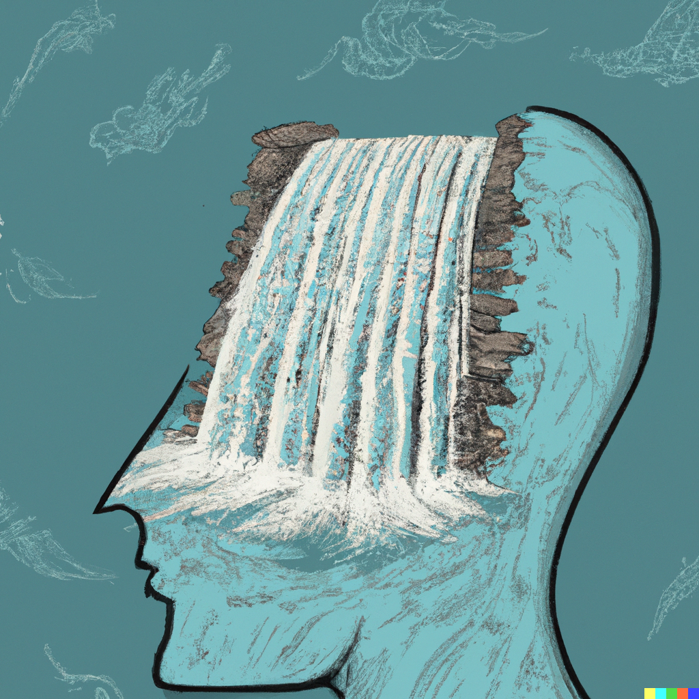
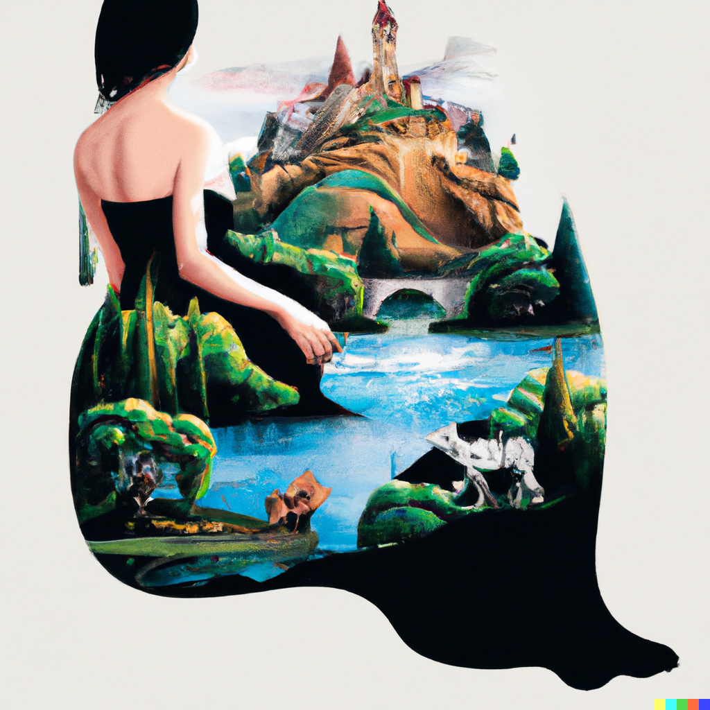
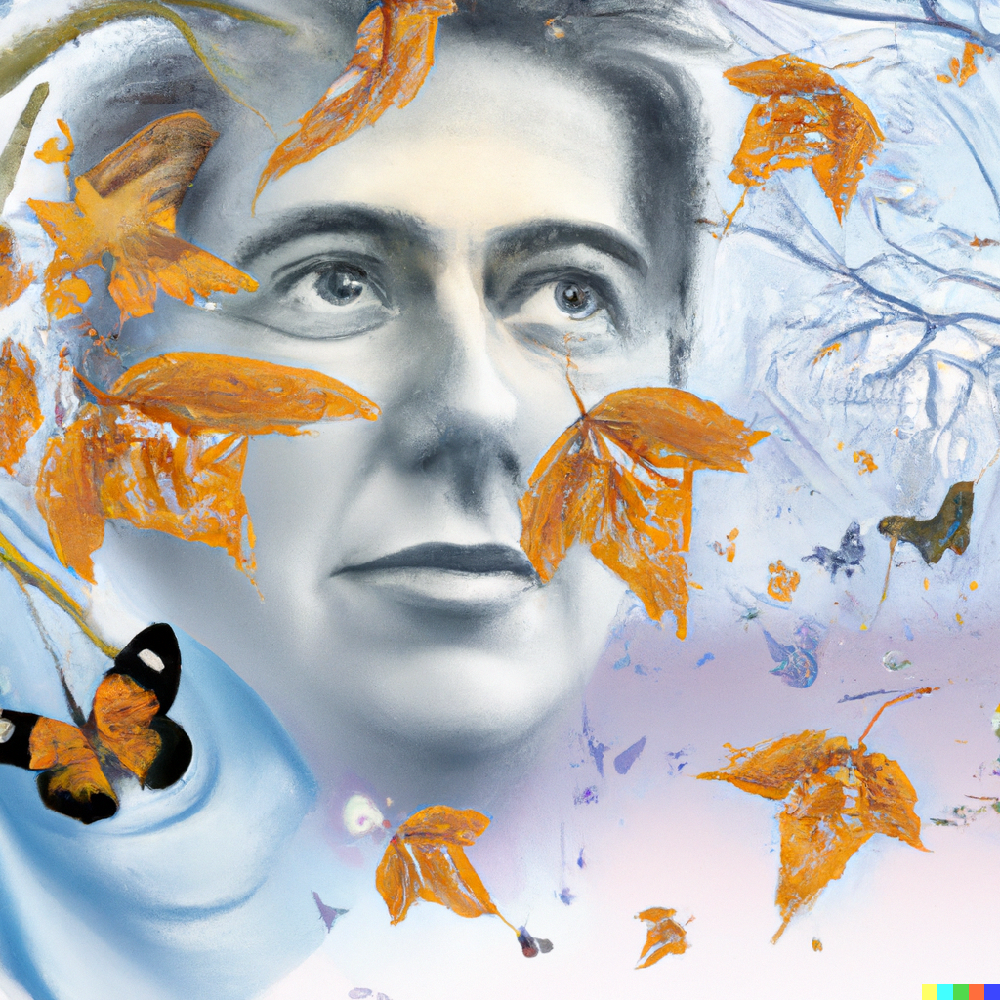
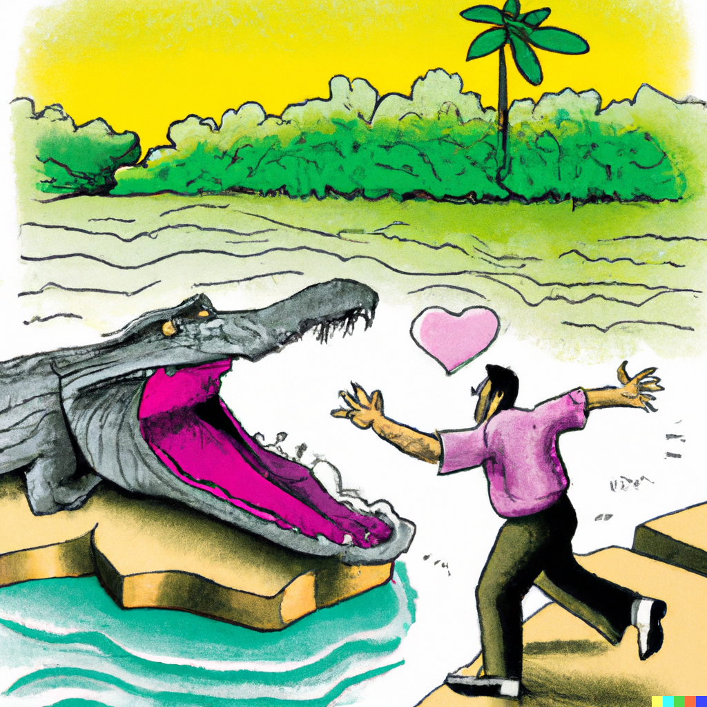
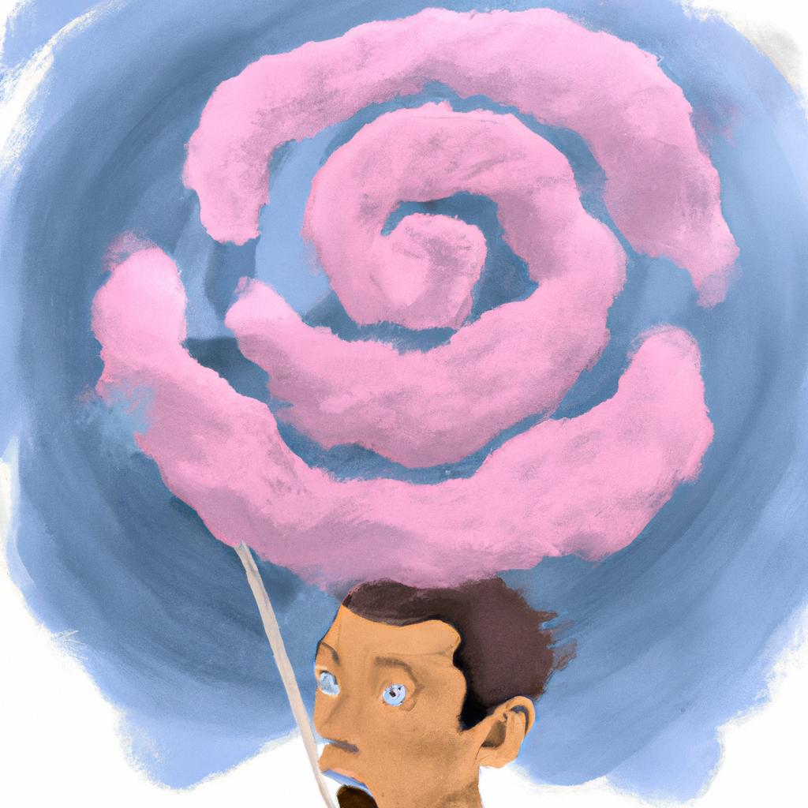
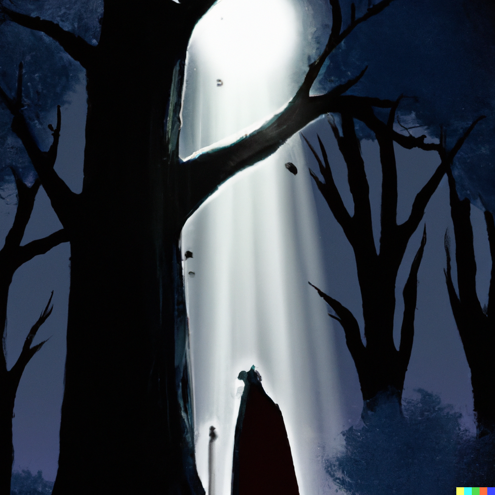
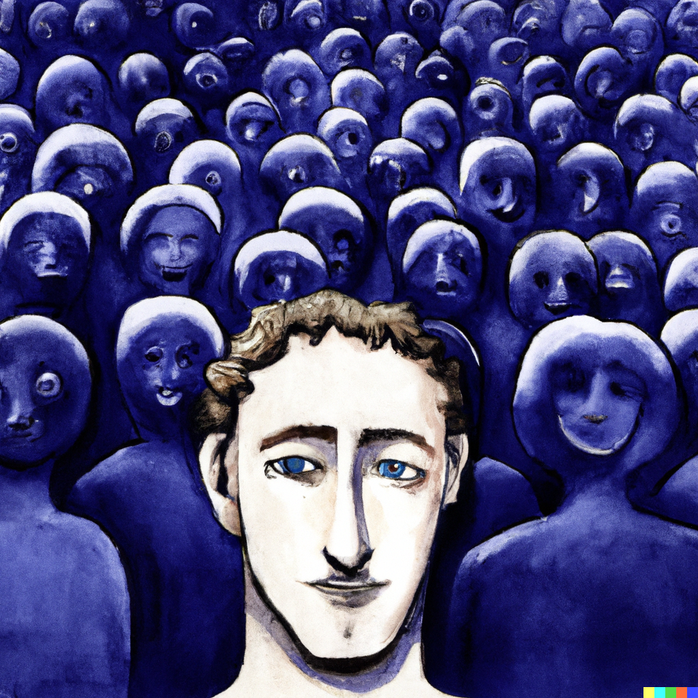

Stony Brook is a fun place to do a PhD in. Not only was it declared as New York state's flagship institution but it is also part of the Empire AI consortium. Stony Brook is also just a short train away from New York City. Last but not the least it has a very strong NLP and vision group (CS ranking)
If you have background in writing and rhetoric and or cognitive science in addition to CS skills, I would love to see you apply for a PhD with me. I wish to admit atleast 1 student with such a background
I am a Research Scientist at Salesforce AI Research.I completed my PhD in Computer Science from Columbia University. Within the department, I was part of the Natural Language Processing group, where I was advised by Smaranda Muresan. My additional thesis committee members are Kathleen McKeown, Julia Hirschberg, Violet Peng and Lydia Chilton.My research was supported by the Columbia Center of Artificial Intelligence & Technology (CAIT) & Amazon Science Ph.D. Fellowship. During 2021-2022, I was a Computational Journalism fellow at NYTimes R&D.
My research interests are broadly in AI, NLP and HCI and my goal is to design and build reliable AI systems that can handle both implicature and ambiguity and are aligned with the requirements humans have from technology. Some of the research directions I am very excited about:
1) Long Form Text Generation Evaluation: How can we design better ways to evaluate long-form text generation by drawing on technical skills from computer science and design in combination with other disciplines, including the humanities, to expand the communities?
2) Evaluation for Reasoning and Explanability: How can we build good evaluations that facilitate both understanding and explainability of complex reasoning patterns in both language ( [1],[2] ) and vision.
3) Design for Human AI Alignment: Todays powerful AI systems are supported by RLHF which converts human feedback/preferences to meaninful training signal. For complex tasks this is a fundamental bottlenck as feedback can be inherently noisy. How can we design better ways to elicit human feedback that improve alignnment?
4) Human AI Collaboration: AI technologies, created by humans and for humans, will increasingly shape future of workforce. How can we design better collaboration strategies and human computer interaction interfaces that understand user intention and preferences, and help them solve tasks efficiently.
I mentored the following students:
-
Arkadiy Saakyan (Columbia Undergrad now PhD student)
Kanishk Singh (Columbia Undergrad)
Aadit Trivedi (Georgia Tech Undergrad)
Here is an live demo of how to improve AI generated writing from my recent paper
Here are some metaphoric illustrations from my previous paper







Media
- Bloomberg AI Has a Way to Go to Become A Connections Puzzle Champ
- MIT Technology Review AI can make you more creative—but it has limits
- MIT Technology Review Why artists are becoming less scared of AI?
- MIT Technology Review What happened when 20 comedians got AI to write their routines?
- Washington Post Can you tell which of these break-up texts are AI-generated?
- The Hollywood Reporter Why AI Isn’t Funny — At Least Not Yet
- The New York Times R&D Generating Open-Ended Questions from News Articles
Recent News
- New paper quantifying and mitigating idiosyncracies in AI writing
- Paper on LLM and abstract reasoning accepted to EMNLP
- Area Chair at ACL 2024
- First author paper on Creativity Evaluation accepted to CHI 2024, Honolulu
- First author paper on Creativity Support with LLM accepted to Creativity and Cognition 2024, Chicago
- Tutorial on Creative Language Generation at EMNLP 2023 with Vishakh Padmakumar, He He, and Nanyun Peng.
Education
Professional Experience

2021

Mosaic (Machine Commonsense Team)
Research Intern (PhD)
Host: Yejin Choi and Vered Shwartz (PhD)

For more details, please see my full CV (PDF).
Papers
2024
Can AI writing be salvaged? Mitigating Idiosyncrasies and Improving Human-AI Alignment in the Writing Process through Edits
Tuhin Chakrabarty , Philippe Laban, Chien-Sheng Wu
[PDF]
[Code and Data]
Tags: LLM and Writing, Text Edits, Human AI Alignment, Behavioral Science
Connecting the Dots: Evaluating Abstract Reasoning Capabilities of LLMs Using the New York Times Connections Word Game
Prisha Samadarshi, Mariam Mustafa, Anushka Kulkarni, Raven Rothkopf, Tuhin Chakrabarty* and Smaranda Muresan*
Accepted to EMNLP Main Conference, 2024
[PDF]
[Code and Data]
Tags: Creative Thinking, Abstract Reasoning, Generative AI, LLM
V-FLUTE: Visual Figurative Language Understanding with Textual Explanations
Arkadiy Saakyan , Shreyas Kulkarni, Tuhin Chakrabarty and Smaranda Muresan
[PDF]
[Code and Data]
Tags: Creativity Understanding, Abstract Thinking, Multimodal Reasoning, Generative AI
Art or Artifice? Large Language Models and the False Promise of Creativity
Tuhin Chakrabarty , Philippe Laban, Divyansh Agarwal, Smaranda Muresan, Chien-Sheng Wu
Tags: Creativity Evaluation, Divergent Thinking, Story Generation, HCI, Generative AI
Creativity Support in the Age of Large Language Models: An Empirical Study Involving Emerging Writers
Tuhin Chakrabarty*, Vishakh Padmakumar * , Faeze Brahman, Smaranda Muresan
* denotes Co-First Authors
* denotes Co-First Authors
Accepted to 16th ACM Conference on Creativity & Cognition
Tags: Co-Creative Generation, Natural Language Instructions, HCI, Generative AI
Identifying Self-Disclosures of Use, Misuse, and Addiction in Community-based Social Media Posts
Chenghao Yang* Tuhin Chakrabarty* , Karli R Hochstatter, Melissa N Slavin, Nabila El-Bassel, Smaranda Muresan
[PDF]
Tags: AI for health, Social Media, Explainability, Trustworthy AI
2023
Learning to Follow Object-Centric Image Editing Instructions Faithfully
Tuhin Chakrabarty ,Kanishk Singh, Arkadiy Saakyan,Smaranda Muresan
Accepted to EMNLP 2023 Findings
[PDF]
[Code and Data]
Tags: Editing images, Diffusion Models, Natural Language Instructions, Vison and Language Models, AI Art, Generative AI
NORMSAGE: Multi-Lingual Multi-Cultural Norm Discovery from Conversations On-the-Fly
Yi Fung, Tuhin Chakrabarty ,Hao Guo,Owen Rambow,Smaranda Muresan,Heng Ji
Accepted to EMNLP 2023 Main conference
[PDF]
[Code and Data]
Tags: Social Norms, Explanability, Dialogue, Grounding
I Spy a Metaphor: Large Language Models and Diffusion Models Co-Create Visual Metaphors
Tuhin Chakrabarty*, Arkadiy Saakyan*, Olivia Winn* , Artemis Panagopoulou, Yue Yang, Marianna Apidianaki, Smaranda Muresan
* denotes Co First Authors
* denotes Co First Authors
Accepted to ACL 2023 Findings
[PDF]
[Code and Data]
Tags: Co-Creative Generation, Natural Language Instructions, Vison and Language Models, AI Art, Generative AI
2022
Help me write a Poem - Instruction Tuning as a Vehicle for Collaborative Poetry Writing
Tuhin Chakrabarty*, Vishakh Padmakumar* , He He
* denotes Co First Authors
* denotes Co First Authors
Accepted to EMNLP 2022 Main Conference
Tags: Co-Creative Writing, Natural Language Instructions, HCI,Human AI Collaboration
FLUTE: Figurative Language Understanding through Textual Explanations
Tuhin Chakrabarty , Arkadiy Saakyan,Debanjan Ghosh and Smaranda Muresan
Accepted to EMNLP 2022 Main Conference
[PDF]
[Code and Data]
Tags: Figurative Language, Natural Language Inference, Free Text Explanation
Fine-tuned Language Models are Continual Learners
Thomas Scialom*, Tuhin Chakrabarty* , and Smaranda Muresan
* denotes Co First Authors
* denotes Co First Authors
Accepted to EMNLP 2022 Main Conference
[PDF]
[Code and Data]
Tags: Continual Learning, Instruction Tuning
Multitask Instruction-based Prompting for Fallacy Detection
Tariq Alhindi , Tuhin Chakrabarty , Elena Musi and Smaranda Muresan
Accepted to EMNLP 2022 Main Conference
[PDF]
[Code and Data]
Tags: Fallacy, Misinformation, Instruction Tuning, Argumentation
CONSISTENT: Open-Ended Question Generation From News Articles
Tuhin Chakrabarty , Justin Lewis and Smaranda Muresan
[PDF]
[Code and Data]
Tags: Controllable Generation, Computational Journalism, Question Generation
It’s not Rocket Science: Interpreting Figurative Language in Narratives
Tuhin Chakrabarty , Yejin Choi and Vered Shwartz
[PDF]
[Code and Data]
Tags: Figurative Language, Multiword Expression, Commonsense
2021
Don't Go Far Off: An Empirical Study on Neural Poetry Translation
Tuhin Chakrabarty , Arkadiy Saakyan and Smaranda Muresan
In Proceedings of EMNLP 2021 ,Punta Cana, Dominican Republic.
Tags: Machine Translation, Figurative Language, Faithfulness
Implicit Premise Generation with Discourse-aware Commonsense Knowledge Models
Tuhin Chakrabarty , Aadit Trivedi and Smaranda Muresan
In Proceedings of EMNLP 2021 ,Punta Cana, Dominican Republic.
Tags: Creative Language Generation, Implicit Reasoning, Discourse aware Commonsense
Metaphor Generation with Conceptual Mappings
Kevin Stowe , Tuhin Chakrabarty , Nanyun Peng, Smaranda Muresan and Iryna Gurevych
In Proceedings of ACL 2021 ,Bangkok, Thailand.
Tags: Creative Language Generation, Figurative Language, Computational Creativity
COVID-Fact: Fact Extraction and Verification of Real-World Claims concerning the COVID-19 pandemic
Arkadiy Saakyan , Tuhin Chakrabarty and Smaranda Muresan
In Proceedings of ACL 2021 ,Bangkok, Thailand.
[PDF]
[Code and Data]
Tags: Language Generation, Argumentation, Fact Checking
Figurative Language in Recognizing Textual Entailment
Tuhin Chakrabarty , Debanjan Ghosh, Adam Poliak and Smaranda Muresan
In Findings of ACL 2021 ,Bangkok, Thailand.
[PDF]
[Code and Data]
Tags: Figurative Language, Textual Entailment
ENTRUST: Argument Reframing with Language Models and Entailment
Tuhin Chakrabarty , Christopher Hidey and Smaranda Muresan
In Proceedings of NAACL 2021 ,Mexico City, Mexico.
[PDF]
[Code and Data]
Tags: Language Generation, Argumentation
MERMAID: Metaphor Generation with Symbolism and Discriminative Decoding
Tuhin Chakrabarty ,Xurui Zhang, Smaranda Muresan and Nanyun Peng
In Proceedings of NAACL 2021 ,Mexico City, Mexico.
[PDF]
[Code and Data]
Tags: Creative Language Generation, Figurative Language, Computational Creativity
Identifying Distributional Perspective Differences from Colingual Groups
Yufei Tian , Tuhin Chakrabarty , Fred Morstatter, Nanyun Peng
In Proceedings of SocialNLP@NAACL 2021 ,Mexico City, Mexico.
[PDF]
[Code and Data]
Tags: Discourse Understanding, Argumentation
DiSCoL: Toward Engaging Dialogue Systems through Conversational Line Guided Response Generation
Sarik Ghazarian, Zixi Liu, Tuhin Chakrabarty ,Xuezhe Ma, Aram Galstyan, Nanyun Peng
In Proceedings of NAACL 2021 (Demo Track) ,Mexico City, Mexico.
[PDF]
[Code and Data]
Tags: Controllable Language Generation, Dialogue Generation, Knowledge Grounding
2020
Generating similes effortlessly like a Pro : A Style Transfer Approach for Simile Generation
Tuhin Chakrabarty , Smaranda Muresan and Nanyun Peng
In Proceedings of EMNLP 2020 ,Punta Cana, Dominican Republic.
Tags: Creative Language Generation, Figurative Language, Computational Creativity
Content Planning for Neural Story Generation with Aristotelian Rescoring
Seraphina Goldfarb-Tarrant, Tuhin Chakrabarty , Ralph Weischedel and Nanyun Peng
In Proceedings of EMNLP 2020 ,Punta Cana, Dominican Republic.
Tags: Creative Language Generation, Narrative, Computational Creativity
R^3: Reverse, Retrieve, and Rank for Sarcasm Generation with Commonsense Knowledge
Tuhin Chakrabarty , Debanjan Ghosh, Smaranda Muresan and Nanyun Peng
In Proceedings of ACL 2020 ,Seattle, WA.
Tags: Creative Language Generation, Figurative Language, Computational Creativity
DeSePtion: Dual Sequence Prediction and Adversarial Examples for Improved Fact-Checking
Christopher Hidey, Tuhin Chakrabarty , Tariq Alhindi, Siddharth Varia, Kriste Krstovski, Mona Diab and Smaranda Muresan.
In Proceedings of ACL 2020 ,Seattle, WA.
Tags: Fact Checking, Discourse, Argumentation
2019
AMPERSAND: Argument Mining for PERSuAsive oNline Discussions
Tuhin Chakrabarty , Christopher Hidey, Smaranda Muresan, Kathy McKeown and Alyssa Hwang.
In Proceedings of EMNLP 2019 ,Hong Kong.
Tags: Discourse, Argumentation
IMHO Fine Tuning Improves Claim Detection
Tuhin Chakrabarty , Christopher Hidey and Kathy McKeown.
In Proceedings of NAACL 2019 ,Minneapolis, MN.
Tags: Discourse, Argumentation
Discourse Relation Prediction: Revisiting Word Pairs with Convolutional Networks
Siddharth Varia ,Christopher Hidey, Tuhin Chakrabarty
In Proceedings of SIGDIAL 2019 ,Stockholm, Sweden
Tags: , Discourse
Pay "Attention'' to your Context when Classifying Abusive Language
Tuhin Chakrabarty ,Kilol Gupta, Smaranda Muresan.
In Proceedings of 3rd Abusive Language Workshop ,ACL 2019 Florence, Italy.
Tags: NLP For Social Good
The Answer is Language Model Fine-tuning
Tuhin Chakrabarty ,Smaranda Muresan.
In Proceedings of the 13th International Workshop on Semantic Evaluation , NAACL-HLT , Minneapolis, USA, June 2019
[PDF]
Tags: Discourse, Argumentation
2018
Robust Document Retrieval and Individual Evidence Modeling for Fact Extraction and Verification
Tuhin Chakrabarty ,Tariq Alhindi , Smaranda Muresan
In Proceedings of the First Workshop on Fact Extraction and VERification (FEVER) ,EMNLP ,Brussels ,2018